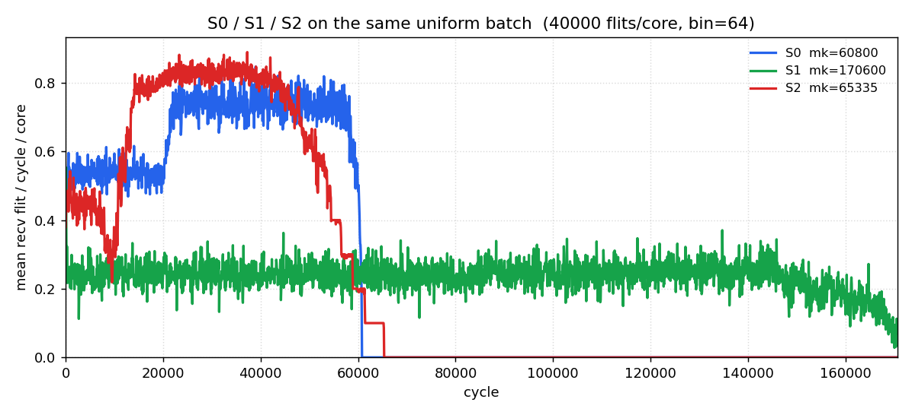
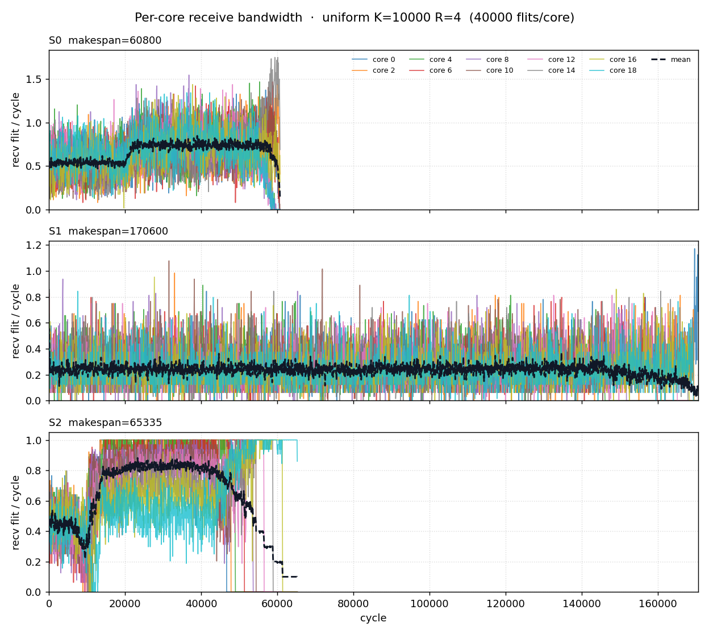
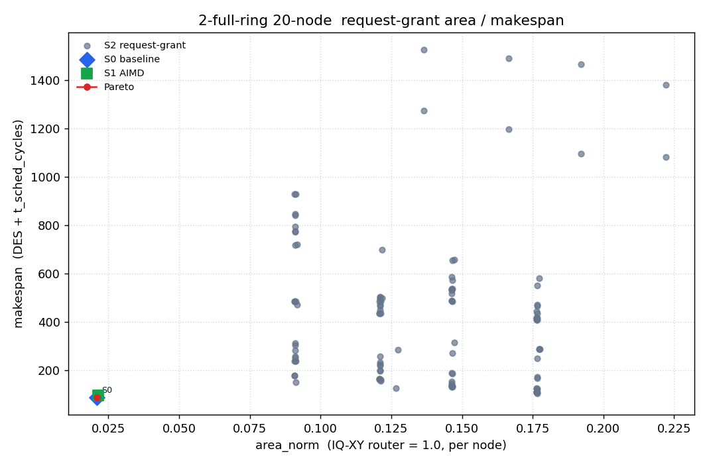

Even indices are AI cores, odd indices are memory Home Agents. Two independent bidirectional ring planes; each node has one port per plane and the two directions of a plane share that port's buffer. Traffic is read-return (1-flit request, R-flit response). Makespan is the cycle the last response flit is drained at the requesting core.
S0 / S1 / S2 are not three different fabrics. They share one point-to-point credit-based datapath and the same I-tag / E-tag guarantees. The sweep only changes how a source is allowed to spend credit (RR, AIMD rate, or a request-grant match).
| layer | S0 RR | S1 AIMD | S2 request-grant |
|---|---|---|---|
| point-to-point credit FC | yes | yes | yes |
| I-tag (inject starvation bound) | yes | yes | yes |
| E-tag (leave / reserved eject) | yes | yes | yes |
| RR inject when credit is available | yes | yes | — |
| AIMD source rate (piggybacked fails) | — | yes | — |
| request-grant match before inject | — | — | yes |
t_inj cycles on a
(plane, dir) raises I-tag and inhibits other injects on that ring until
it boards. Bounds inject starvation.t_xfer times raises E-tag and may use
resv_ej reserved eject slots; otherwise it deflects and
rides another lap. Rebound onto reserved eject entries — an
adaptation, not HiRD's transfer-FIFO E-tag.14/14 checks passed.
| check | result |
|---|---|
| topo_roles_and_wrap | ok |
| workload_counts | ok |
| s0_completes_and_conserves | ok |
| s1_completes_and_conserves | ok |
| three_schemes_same_flits | ok |
| makespan_ge_bound | ok |
| inring_never_blocked | ok |
| itag_starve_finite | ok |
| etag_deflect_bounded | ok |
| rg_replay_conflict_free | ok |
| rg_req_before_resp | ok |
| uniform_multi_seed_s0 | ok |
| cost_ring2_preserves_mesh_cal | ok |
| plane_sel_all_work | ok |
Same credit + I-tag / E-tag datapath on every row. S0 = RR inject, no source rate control. S1 = S0 + piggybacked failure counts + AIMD token bucket. S2 = request-grant iSLIP (I=2, interval, arc) on the same hops. Bound is the analytic floor (link / port / cut / single-txn).
| scheme | pattern | R | m or K | mean | min | max | bound | ok |
|---|---|---|---|---|---|---|---|---|
| S0 | allpairs | 1 | 2 | 74.0 | 74 | 74 | 25 | yes |
| S0 | allpairs | 1 | 4 | 124.0 | 124 | 124 | 50 | yes |
| S0 | allpairs | 1 | 1 | 44.0 | 44 | 44 | 20 | yes |
| S0 | allpairs | 4 | 4 | 323.0 | 323 | 323 | 140 | yes |
| S0 | allpairs | 4 | 2 | 169.0 | 169 | 169 | 70 | yes |
| S0 | allpairs | 4 | 1 | 92.0 | 92 | 92 | 35 | yes |
| S0 | allpairs | 8 | 1 | 168.0 | 168 | 168 | 65 | yes |
| S0 | allpairs | 8 | 2 | 319.0 | 319 | 319 | 130 | yes |
| S0 | allpairs | 8 | 4 | 611.0 | 611 | 611 | 260 | yes |
| S0 | uniform | 1 | 50 | 127.7 | 122 | 133 | 67 | yes |
| S0 | uniform | 1 | 100 | 234.0 | 231 | 238 | 135 | yes |
| S0 | uniform | 1 | 20 | 76.7 | 73 | 83 | 33 | yes |
| S0 | uniform | 4 | 100 | 671.7 | 661 | 692 | 376 | yes |
| S0 | uniform | 4 | 20 | 166.0 | 162 | 169 | 95 | yes |
| S0 | uniform | 4 | 50 | 342.0 | 337 | 351 | 192 | yes |
| S0 | uniform | 8 | 100 | 1289.7 | 1238 | 1321 | 698 | yes |
| S0 | uniform | 8 | 20 | 304.0 | 290 | 312 | 177 | yes |
| S0 | uniform | 8 | 50 | 676.7 | 637 | 719 | 362 | yes |
| S1 | allpairs | 1 | 2 | 153.3 | 99 | 224 | 25 | yes |
| S1 | allpairs | 1 | 4 | 414.7 | 269 | 503 | 50 | yes |
| S1 | allpairs | 1 | 1 | 53.0 | 49 | 57 | 20 | yes |
| S1 | allpairs | 4 | 4 | 805.3 | 548 | 1214 | 140 | yes |
| S1 | allpairs | 4 | 1 | 122.3 | 92 | 176 | 35 | yes |
| S1 | allpairs | 4 | 2 | 364.7 | 256 | 572 | 70 | yes |
| S1 | allpairs | 8 | 2 | 643.0 | 328 | 1225 | 130 | yes |
| S1 | allpairs | 8 | 4 | 1415.3 | 744 | 2582 | 260 | yes |
| S1 | allpairs | 8 | 1 | 263.0 | 159 | 468 | 65 | yes |
| S1 | uniform | 1 | 100 | 1242.7 | 1221 | 1272 | 135 | yes |
| S1 | uniform | 1 | 20 | 109.0 | 105 | 117 | 33 | yes |
| S1 | uniform | 1 | 50 | 524.7 | 501 | 548 | 67 | yes |
| S1 | uniform | 4 | 100 | 1784.7 | 1774 | 1798 | 376 | yes |
| S1 | uniform | 4 | 20 | 259.0 | 184 | 304 | 95 | yes |
| S1 | uniform | 4 | 50 | 757.0 | 692 | 829 | 192 | yes |
| S1 | uniform | 8 | 20 | 408.7 | 360 | 456 | 177 | yes |
| S1 | uniform | 8 | 50 | 1146.0 | 990 | 1260 | 362 | yes |
| S1 | uniform | 8 | 100 | 2226.7 | 2206 | 2246 | 698 | yes |
| S2 | allpairs | 1 | 2 | 51.0 | 51 | 51 | 25 | yes |
| S2 | allpairs | 1 | 4 | 91.0 | 91 | 91 | 50 | yes |
| S2 | allpairs | 1 | 1 | 38.0 | 38 | 38 | 20 | yes |
| S2 | allpairs | 4 | 1 | 85.0 | 85 | 85 | 35 | yes |
| S2 | allpairs | 4 | 2 | 165.0 | 165 | 165 | 70 | yes |
| S2 | allpairs | 4 | 4 | 286.0 | 286 | 286 | 140 | yes |
| S2 | allpairs | 8 | 2 | 308.0 | 308 | 308 | 130 | yes |
| S2 | allpairs | 8 | 4 | 549.0 | 549 | 549 | 260 | yes |
| S2 | allpairs | 8 | 1 | 158.0 | 158 | 158 | 65 | yes |
| S2 | uniform | 1 | 50 | 107.0 | 104 | 109 | 67 | yes |
| S2 | uniform | 1 | 100 | 197.0 | 195 | 199 | 135 | yes |
| S2 | uniform | 1 | 20 | 57.3 | 56 | 58 | 33 | yes |
| S2 | uniform | 4 | 20 | 181.0 | 174 | 192 | 95 | yes |
| S2 | uniform | 4 | 50 | 357.0 | 351 | 368 | 192 | yes |
| S2 | uniform | 4 | 100 | 671.0 | 655 | 686 | 376 | yes |
| S2 | uniform | 8 | 50 | 689.0 | 676 | 698 | 362 | yes |
| S2 | uniform | 8 | 100 | 1359.0 | 1344 | 1380 | 698 | yes |
| S2 | uniform | 8 | 20 | 334.0 | 324 | 348 | 177 | yes |
Wall 216.4s, 864 rows. Quick=False.
uniform K=10000 R=4 seed=0,
plane_sel=least_occupied. Every core receives the same number of
response flits. Overlay shares one time axis so S0 / S1 / S2 can be compared
directly. All three ride the same credit + I-tag / E-tag datapath.
Board counts are for response data destined to that core:
上环 = successful injects, CW = dir +1, CCW = dir −1, 失败 = inject attempts
that found the slot busy or I-tag blocked (AIMD token denials are not
counted). S2 still has I-tag / E-tag; its 失败 is 0 because a grant is
placed only when the hop already has credit, so the reactive tags are not
exercised on this closed batch.


| S0 RR | S1 AIMD | S2 request-grant | |
|---|---|---|---|
| makespan | 60800 | 170600 | 65335 |
| core 0 | 上环 40000 (CW 19880 / CCW 20120) 失败 79969 (CW 39993 / CCW 39976) | 上环 40000 (CW 19880 / CCW 20120) 失败 9332 (CW 4481 / CCW 4851) | 上环 40000 (CW 19880 / CCW 20120) 失败 0 (CW 0 / CCW 0) |
| core 2 | 上环 40000 (CW 20044 / CCW 19956) 失败 78459 (CW 39553 / CCW 38906) | 上环 40000 (CW 20044 / CCW 19956) 失败 8896 (CW 4402 / CCW 4494) | 上环 40000 (CW 20044 / CCW 19956) 失败 0 (CW 0 / CCW 0) |
| core 4 | 上环 40000 (CW 19580 / CCW 20420) 失败 82368 (CW 39791 / CCW 42577) | 上环 40000 (CW 19580 / CCW 20420) 失败 10337 (CW 4963 / CCW 5374) | 上环 40000 (CW 19580 / CCW 20420) 失败 0 (CW 0 / CCW 0) |
| core 6 | 上环 40000 (CW 20160 / CCW 19840) 失败 78100 (CW 39439 / CCW 38661) | 上环 40000 (CW 20160 / CCW 19840) 失败 9660 (CW 4793 / CCW 4867) | 上环 40000 (CW 20160 / CCW 19840) 失败 0 (CW 0 / CCW 0) |
| core 8 | 上环 40000 (CW 20164 / CCW 19836) 失败 80213 (CW 40015 / CCW 40198) | 上环 40000 (CW 20164 / CCW 19836) 失败 9922 (CW 5057 / CCW 4865) | 上环 40000 (CW 20164 / CCW 19836) 失败 0 (CW 0 / CCW 0) |
| core 10 | 上环 40000 (CW 20156 / CCW 19844) 失败 80149 (CW 40665 / CCW 39484) | 上环 40000 (CW 20156 / CCW 19844) 失败 10183 (CW 5121 / CCW 5062) | 上环 40000 (CW 20156 / CCW 19844) 失败 0 (CW 0 / CCW 0) |
| core 12 | 上环 40000 (CW 20104 / CCW 19896) 失败 82014 (CW 41408 / CCW 40606) | 上环 40000 (CW 20104 / CCW 19896) 失败 9193 (CW 4629 / CCW 4564) | 上环 40000 (CW 20104 / CCW 19896) 失败 0 (CW 0 / CCW 0) |
| core 14 | 上环 40000 (CW 20348 / CCW 19652) 失败 77358 (CW 39481 / CCW 37877) | 上环 40000 (CW 20348 / CCW 19652) 失败 9016 (CW 4692 / CCW 4324) | 上环 40000 (CW 20348 / CCW 19652) 失败 0 (CW 0 / CCW 0) |
| core 16 | 上环 40000 (CW 19680 / CCW 20320) 失败 78993 (CW 39283 / CCW 39710) | 上环 40000 (CW 19680 / CCW 20320) 失败 9156 (CW 4713 / CCW 4443) | 上环 40000 (CW 19680 / CCW 20320) 失败 0 (CW 0 / CCW 0) |
| core 18 | 上环 40000 (CW 20076 / CCW 19924) 失败 79158 (CW 39140 / CCW 40018) | 上环 40000 (CW 20076 / CCW 19924) 失败 9108 (CW 4687 / CCW 4421) | 上环 40000 (CW 20076 / CCW 19924) 失败 0 (CW 0 / CCW 0) |
| total | 上环 400000 (CW 200192 / CCW 199808) 失败 796781 (CW 398768 / CCW 398013) | 上环 400000 (CW 200192 / CCW 199808) 失败 94803 (CW 47538 / CCW 47265) | 上环 400000 (CW 200192 / CCW 199808) 失败 0 (CW 0 / CCW 0) |
Wall 1420.5s.
y = makespan_des + t_sched_cycles (scheduler delay charged
back). x = area_norm (IQ-XY router = 1.0, per node). S0 and S1 sit on the
same plot as reference points. Area counts the shared credit +
I-tag / E-tag datapath on all three schemes; S2 adds the arbiter and a
small control-plane tax on top of that datapath — it does not delete
station storage. Bit-equivalent model calibrated so mesh
greedy_ff = 0.05; not mm².

| tag | area_norm | makespan |
|---|---|---|
| S0 | 0.021 | 89 |
1 non-dominated points, 111 evaluated, wall 1.9s.
t_sched_cycles — an algorithm that is only fast
because it is unbuildable is charged for that.Write-up: docs/phase-7-exploration/ring2-20node-core-ha.md